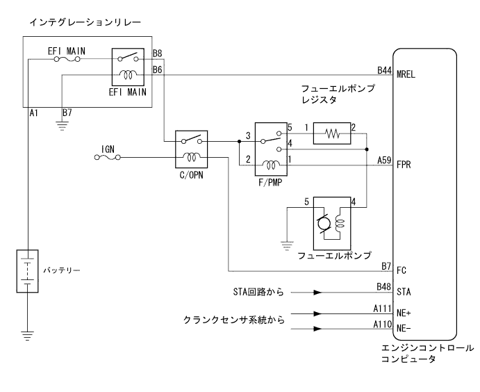

DTC P0230/78 Fuel Pump Relay Circuit |
| DTCNo. SAE/TCCS | DTC Detection Condition
| Inspection Area |
|---|---|---|
| P0230/78 |
|
|
).
| Step 1 | Perform TaSCAN Active Test (F/PMP Relay) |
Turn the IG ON with the engine stopped.
Following the SST (TaSCAN) screen display, perform [Active Test] - [FP Relay ON].
| Result | Proceed to |
|---|---|
| F/PMP relay does not operate | A |
| F/PMP relay operates | B |
|
| ||||
| A | |
| Step 2 | Inspect Fuel Pump Relay (F/PMP Relay) |
 |
Using SST (Toyota electrical tester), measure the resistance between the terminals.
| Tester Connection | Condition | Standard |
|---|---|---|
| 1 - 2 | Always | Below 1 Ω |
| 3 - 5 | Always | 10k Ω or higher |
| 3 - 4 | Always | Below 1 Ω |
Measure the resistance between the terminals when battery voltage is applied between terminals 1 and 2.
| Tester Connection | Condition | Standard |
|---|---|---|
| 3 - 5 | Battery voltage applied between terminals 1 and 2 | Below 1 Ω |
| 3 - 4 | Battery voltage applied between terminals 1 and 2 | 10k Ω or higher |
|
| ||||
| OK | ||
| ||